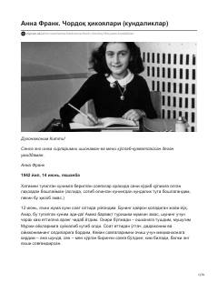

CHAnna Frankning urush davridagi hayoti va kechinmalari aks etgan mashhur kundaligi.
Ushbu asar Anna Frank ismli yahudiy qizaloqning Ikkinchi jahon urushi yillarida natsistlar ta'qibidan yashirinib yurgan paytlarida yozgan kundaliklaridan iborat. Unda o'smir qizning ichki kechinmalari, qo'rquvlari va umidlari aks etgan.